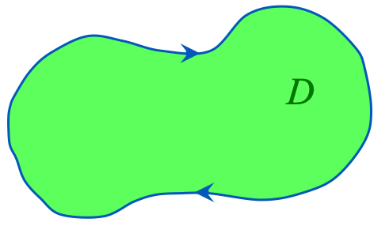
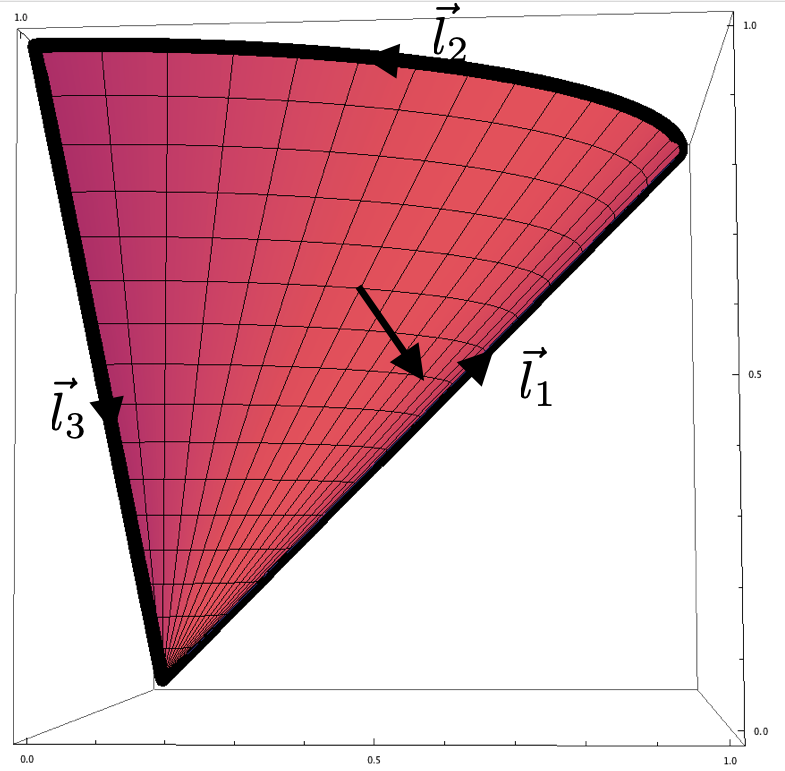

Exercicios de exame#
# general imports
%matplotlib inline
%reload_ext autoreload
%autoreload 2
# numpy and matplotlib
import numpy as np
import matplotlib
import matplotlib.pyplot as plt
from mpl_toolkits.mplot3d import Axes3D
matplotlib.style.use('ggplot')
import graph_utils as gf
figsize = 6, 3.8
cmap = 'hot'
Razoa se son verdadeiras ou falsas as seguintes afirmacións:#
No intervalo de integración \(\sin x \geq 0\) e
Razoa se son verdadeiras ou falsas as seguintes afirmacións:#
b) A rexión \(D\) da figura ten unha área de 7 unidades. Sexa o campo vectorial \({\vec{F}(x,y)=(-y,x)}\), entón
onde \(C\) indica a curva que rodea a \(D\) circulada na dirección que indican as frechas.
{kind=link}
A rexión \(D\) da figura ten unha área de 7 unidades. Sexa o campo vectorial \({\vec{F}(x,y)=(-y,x)}\), entón
onde \(C\) indica a curva que rodea a \(D\) circulada na dirección que indican as frechas.
Polo teorema de Green
onde a circulación da curva se fai no sentido contrario ao das agullas dun reloxo. Pero como se indica que a curva se circula no sentido das agullas do reloxo, temos que cambiar o signo, e a afirmación é verdadeira.
Verifica o teorema de Stokes para a superficie#
con \(0 \leq u \leq 1\) e \(0 \leq v \leq \pi/2\), e o campo
O teorema de Stokes establece que para unha superficie \(\vec{S}\) $\( \int_S \vec{\nabla} \times \vec{F} \cdot {\rm d}\vec{S} = \int_C \vec{F}\cdot {\rm d}\vec{r}, \)\( onde \)C$ é a curva que rodea a superficie percorrida segundo a prescrición da man dereita (ver a figura).
{kind=link}
Para esa superficie $$ {\rm d}\vec{S} = \pm \left| \begin{array}{ccc} \hat{i} & \hat{j} & \hat{k} \ \frac{\partial S_x}{\partial u} & \frac{\partial S_y}{\partial u} & \frac{\partial S_z}{\partial v} \ \frac{\partial S_x}{\partial v} & \frac{\partial S_y}{\partial v} & \frac{\partial S_z}{\partial v} \end{array} \right| {\rm d}u{\rm d}v#
\pm \left| \begin{array}{ccc} \hat{i} & \hat{j} & \hat{k} \ \cos v & \sin v & 1 \ -u\sin v & u \cos v & 0 \end{array} \right| {\rm d}u{\rm d}v = \pm (-\cos v, -\sin v,1) u {\rm d}u{\rm d}v. $\( Temos arbitrariedade para escoller a orientación da superficie. Se escollemos a da figura temos que tomar o signo negativo en \){\rm d}\vec{S}$.
Por outra banda $$ \vec{\nabla} \times \vec{F} = \left| \begin{array}{ccc} \hat{i} & \hat{j} & \hat{k} \ \frac{\partial \phantom{F}}{\partial x} & \frac{\partial \phantom{F}}{\partial y} & \frac{\partial \phantom{F}}{\partial z} \ F_x & F_y & F_z \ \end{array} \right|#
\left| \begin{array}{ccc} \hat{i} & \hat{j} & \hat{k} \ \frac{\partial \phantom{F}}{\partial x} & \frac{\partial \phantom{F}}{\partial y} & \frac{\partial \phantom{F}}{\partial z} \ z & x & y \end{array} \right| = \frac{\partial y}{\partial y} \hat{i} + \frac{\partial z}{\partial z} \hat{j} + \frac{\partial x}{\partial x} \hat{k} = (1,1,1), $$
e por tanto, coa prescrición escollida,
A superficie cumpre \(x^2+y^2 = z^2\), é dicir, é un cuarto dun cono que vai desde \(z=0\) ata \(z=1\), collendo so o primeiro cadrante. A fronteira desa superficie está delimitada por tres curvas simples, \(C = \vec{l}_1 \cup \vec{l}_2 \cup \vec{l}_3\), tal como indica a figura. Se empezamos a circulala pola vértice inferior a curva \(\vec{l}_1\) correspóndese coa fronteira da superficie na que \(v=\pi/2\) e por tanto pode parametrizarse como:
A segunda curva correspóndese co segmento de circunferencia no que \(u=1\) pero o sentido de circulación correspóndese con unha variación decrecente de \(v\), isto é, imos desde \(v=\pi/2 \rightarrow 0\). Para usar un parámetro que creza nesa curva, podemos tomar \(v^\prime = \pi/2 - v\). Con esa elección temos que
Finalmente pasamos desde o punto \((1,0,1)\) ao punto \((0,0,0)\) por un segmento rectilíneo que se pode parametrizar como
e por tanto $\( {\rm d}\vec{l}_1= (0,1,1) {\rm d}u, \qquad {\rm d}\vec{l}_2 = (\cos v^\prime,\sin v^\prime,0){\rm d}v^\prime, \qquad {\rm d}\vec{l}_3= (-1,0,-1){\rm d}t. \)$
A integral de liña do campo é $\( \int_{C} \vec{F} \cdot {\rm d}\vec{r} = \int_{0}^1 \vec{F}(0,u,u) \cdot {\rm d}\vec{l}_1 + \int_{0}^{\pi/2} \vec{F}(\sin v^\prime,\cos v^\prime,1) \cdot {\rm d}\vec{l}_2 + \int_{0}^1 \vec{F}(1-t,0,1-t) \cdot {\rm d}\vec{l}_3 \)$
Polo que queda verificado o teorema de Stokes para este problema.
Exercicios non de exame#
Calcular#
\( \int\limits_Vz^2 dx\ dy\ dz \), onde \(V\) é a parte dunha esfera de raio 2 que resta tras sustraerlle un cilindro de raio 1.
A figura ten esta forma

con parametrización
En coordenadas cilíndricas temos:
Co que
Calcular#
onde
e a superficie é \(y^{2}+z^{2}=x^{2}\) entre os planos \(x=1\) e \(x=2\).
R = 3
rrange, phirange = (0, R, 40), (0, 2*np.pi, 40)
## surface
sy = lambda r, phi : r * np.cos(phi)
sz = lambda r, phi : r * np.sin(phi)
sx = lambda r, phi : np.sqrt(sy(r, phi)*sy(r, phi) + sz(r, phi)*sz(r, phi))
## field
Fx = lambda x,y,z: 2-x**2*y*z+y**3
Fy = lambda x,y,z: x*y**2*z+y*np.exp(z)
Fz = lambda x,y,z: y**2+z-np.exp(z)
## limits
cx1 = lambda phi : 2 + 0.*phi
cy1 = lambda phi : 2 * np.cos(phi)
cz1 = lambda phi : 2 * np.sin(phi)
cx2 = lambda phi : 1 + 0.*phi
cy2 = lambda phi : 1 * np.cos(phi)
cz2 = lambda phi : 1 * np.sin(phi)
fig,ax = gf.wfsurface(sx, sy, sz, rrange, phirange, alpha = 0.4, color='red')
#gf.quiver3d_in_wfsurface(Fx, Fy, Fz, sx, sy, sz, rrange, phirange, newfig = [fig,ax], alpha = 0.5, color = 'yellow');
gf.line3d (cx1, cy1, cz1, phirange, newfig = [fig,ax], alpha = 0.4, color = 'black');
gf.line3d (cx2, cy2, cz2, phirange, newfig = [fig,ax], alpha = 0.4, color = 'black');
gf.line3d (cx, cy, cz, phirange, newfig = [fig,ax], alpha = 0.4, color = 'black');
---------------------------------------------------------------------------
NameError Traceback (most recent call last)
<ipython-input-4-f2b26d5c28ee> in <module>
----> 1 gf.line3d (cx, cy, cz, phirange, newfig = [fig,ax], alpha = 0.4, color = 'black');
NameError: name 'cx' is not defined
O Teorema da Diverxencia danos:
No noso caso, \(S\) non é unha superficie pechada, así que teremos que restar o fluxo a través das superficies formadas nos planos \(x=1\) e \(x=2\), que chamaremos \(S_1\) e \(S_2\).
Calculamos a diverxencia de \(\vec{F}\):
A integral tripla da función constante 1 simplemente dános o volume da área encerrada pola superficie. Aquí, dado que a nosa superficie non está pechada, primeiro consideramos o caso de que está pechada e logo restamos a integral da superficie a través das dúas superficies que pechan o noso sólido, pero non son parte da superficie que queremos considerar.
A superficie, \(y^2 + z^2 = x^2\) corresponde a un cono arredor do eixo \(x\). Podemos calcular o mesmo volume arredor do eixo \(z\), en cilíndricas, onde \(1<z<2\). En cilíndricas, o cono cumpre \(z=r\). En cilíndricas temos \(\mathrm{d}V = r\mathrm{d}r \mathrm{d}\phi \mathrm{d}z \). Así $\( V = \int_0^{2\pi} \left( \int_1^{2} \left( \int_0^{z} r \mathrm{d}r \right) \mathrm{d}z \right) \mathrm{d}\phi \)$
Agora, consideramos a integral de superficie en \(S_1\) e \(S_2\), comezando por \(S_1\).
En \(S_1\), \(x = 1\) e o vector normal unitario \(\hat{n}\) é simplemente \(-\hat{x}\). Na superficie, \(\vec{F}\) é dado por
En cada superficie perpendicular ao eixo \(x\), teremos dous círculos. En \(x=1\) o círculo terá raio 1, en \(x=2\) terá raio 2. Dado que estamos integrando sobre círculos, transformamos a coordenadas polares con \((y,z)\rightarrow(r\cos\varphi, r\sin\varphi)\). O noso elemento de superficie é \(\text{d}\vec{S} = -r\hat{x}\text{d}r\text{d}\varphi\).
Xa que o produto interno cun vector unitario só nos dá esa compoñente dun campo vectorial, temos:
Na segunda liña, as integrais das funcións trigonométricas evalúanse a 0 porque son periódicas en 2\(\pi\).
Do mesmo xeito, tratamos \(S_2\). Aquí o vector normal unitario \(\hat{n}\) é \(\hat{x}\), non \(-\hat{x}\), e \(x=2\) en todas partes.
Unha vez máis, cambiamos a coordenadas polares e só consideramos a compoñente \(x\). Agora temos:
Xuntando estes resultados, obtemos
Calcular#
Verificar o teorema da diverxencia para o campo vectorial \(\bf{F}\left({x,y,z} \right) = x{y^2}{\bf{i}} + y{x^2}{\bf{j }} + e{\bf{k}}\) e a superficie S, limitada por \(z = \sqrt {{x^2} + {y^2}}\) e \(z = 4\).
A superficie está en coordenadas cilíndricas \(z=r\), polo que, \(\nabla\cdot{\bf F}=y^2+x^2=r^2\)
A parte da superficie do teorema da diverxencia: Para o cono: como \(z=r\), o vector da supreficie en coordenadas cartesianas é \({\bf r}=(u\cos v,u\sin v,u), 0\leq v\lt2\pi\) e \(0\lt u\lt4\). Por outra banda \({\bf} F=(u^3\cos v\sin^2v,u^3\sin v\cos^2v,e)\). Para os vectores tanxentes:
Necesitamos o vector normal apuntando cara fóra. Como \({\bf r}_u\) apunta a r crecente, \({\bf r}_v\) apunta no sentido antihorario e son ortogonais, a normal apuntando cara fóra é \({\bf r}_v\times{\bf r}_u\)
Para o disco: o vector da superficie é \({\bf r}=(u\cos v,u\sin v,4)\), \(0\leq v\lt2\pi\) e \(0\lt u\lt4\).
O vector normal que apunta cara a fóra é
E para o fluxo total:
Verificar#
o teorema de Stokes para o campo vectorial \(\vec{F} = (y, −x, xyz)\) e a superficie aberta dada en coordenadas polares cilíndricas por \(r + z = a\), con \(z > 0\) e \(a > 0\)
En primeiro lugar, enunciamos o teorema de Stokes: $\( \oint_\Gamma \vec{F} \cdot d\vec{\Gamma} = \iint_S \nabla \times \vec{F} \cdot d\vec{S} \)$
Antes de comezar a calcular integrais, débese visualizar a xeometría do problema. Neste caso, S representa unha xeometría de cono, para a cal a altura é \(a\) e a súa base está centrada en \((0,0,0)\), mentres que \(\Gamma\) representa o seu límite, é dicir, unha circunferencia cuxo raio é \(a\) e está centrada na orixe.
Neste caso, a parte máis sinxela é o lado esquerdo, que se obtén inmediatamente (tendo en conta a relación entre \((x,y)\) e \((r,\theta)\)):
O que leva a: $\( \oint_\Gamma F \cdot d\Gamma = \int_0^{2\pi} -a^2 (\cos^2(\theta)+\sin^2(\theta)) d\theta = -2\pi a^2 \)$
Queda por demostrar o lado dereito. Primeiro, comeza a calcular o rotacional do campo \(\vec{F}\):
Unha vez calculado o rotacional, continuamos con \(d\vec{S}\). Como temos un gráfico \(z=f(x,y)=a-r = a - \sqrt{x^2+y^2}\), cúmprese
Co que \(d\vec{S} = \vec{n} dxdy = \left(\cos(\theta),\sin(\theta),1\right) r dz d\theta\)
Unha vez que temos \(\nabla \times \vec{F}\) e \(d\vec{S}\), podemos calcular o termo integral \(\nabla \times \vec{F} \cdot d\vec{S}\):
Este termo ten que ser avaliado en todo S. Podemos parametrizar S con \(\theta\) e \(r\) e lembrando que \(r=a-z\), é dicir, \(S= \left\{ (r,\theta,z) \vert 0 \leq z \leq a , 0 \leq \theta < 2\pi, r = a-z\right\}\):
Como \(\int_0^{2\pi} (\cos^2(\theta)-\sin^2(\theta)) d\theta = 0\):